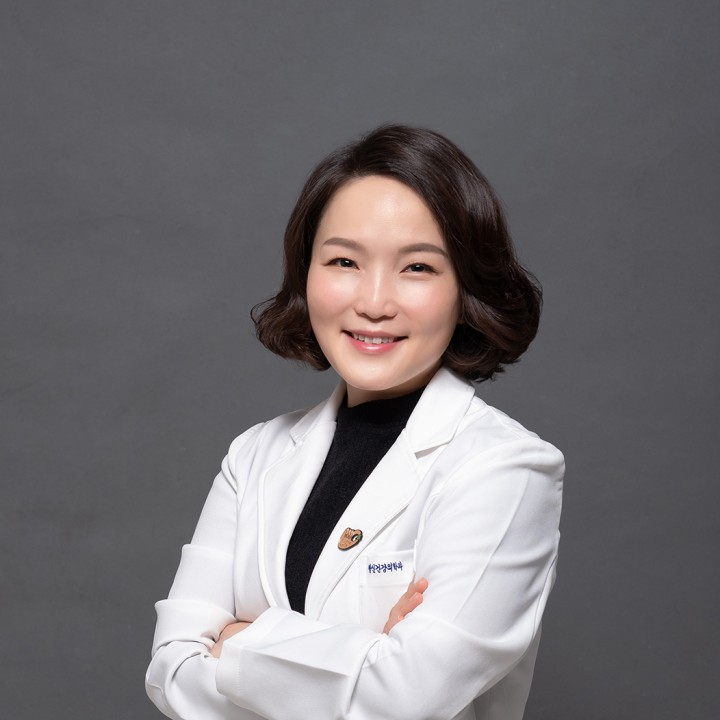
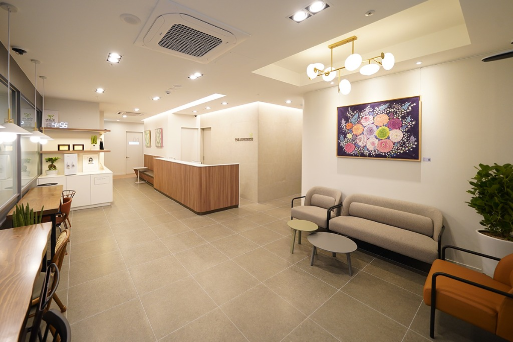
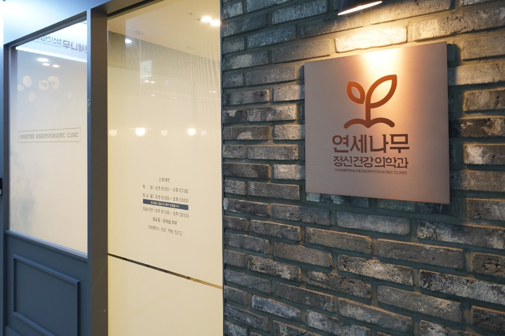
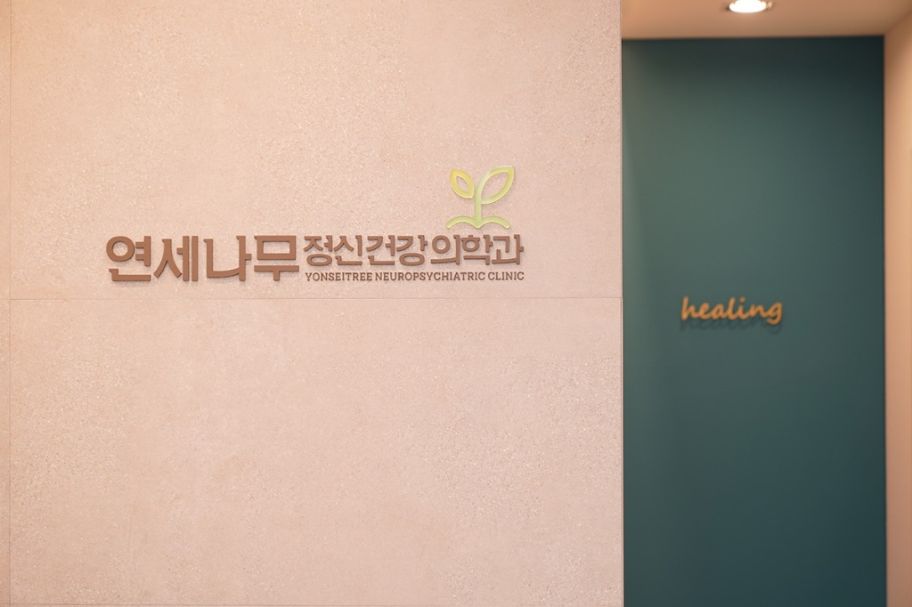
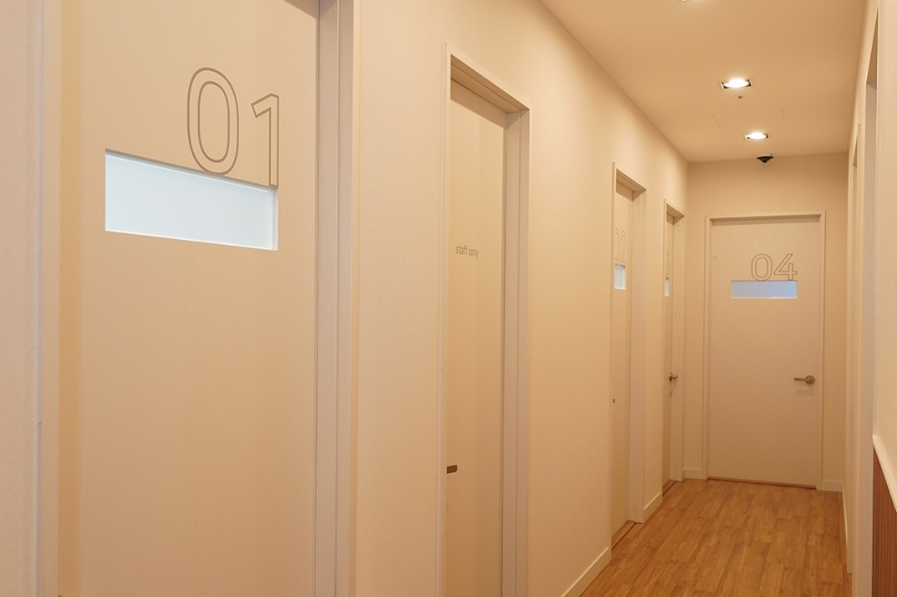

아이의 성장을 기다려주는 마음의 숲, 연세나무정신건강의학과
우리 아이, 왜 이럴까 자책하며 홀로 힘들어하셨나요? 부모님의 탓이 아닙니다. 《기질육아》 저자 원장단과 1급 전문 치료사진이 아이의 기질을 깊이 이해하고 덜 싸우며 더 잘 사랑할 수 있도록 따뜻한 위안과 맞춤 양육의 답을 찾아드립니다.
차지민 원장 • 김남욱 원장 (소아청소년 세부전문의)
진료안내 & 오시는 길 →
김현진 원장 (소아청소년 세부전문의)
진료안내 & 오시는 길 →
"우리 아이, 왜 이럴까요?"
부모님의 탓이 아닙니다. 아이마다 타고난 바탕이 다를 뿐입니다.
쉽게 울고 짜증 내는 아이, 시작도 전에 쉽게 포기하는 아이, 의욕도 욕심도 너무 없는 아이,
혹은 친구들에게 상처받으면서도 자꾸 끌려가는 아이를 보며...
"내가 양육을 잘못하고 있는 걸까?", "내가 부족한 부모라서 그런 걸까?" 수없이 자책하며 남몰래 가슴 아파하셨나요?
육아의 어려움은 부모의 정성이 부족해서 생기는 것이 아닙니다. 세상에 태어난 모든 아이는 저마다 세상을 탐색하고 반응하는 '고유한 기질(타고난 바탕)'을 품고 태어납니다. 아이의 기질을 이해하지 못한 채 세상의 획일적인 기준에 맞추려 하면, 부모와 아이는 매일 싸우고 서로에게 깊은 상처를 남기게 됩니다.
"기질을 알면 덜 싸우고, 더 잘 사랑하며 키울 수 있습니다."
아이의 타고난 바탕을 깊이 관찰하고 인정해 주는 순간, 부모의 죄책감은 내려앉고 아이의 가능성을 활짝 꽃피우는 진정한 부모의 기술이 시작됩니다.
연세나무정신건강의학과는 조급함 없이 아이의 속도에 맞추어 성장을 기다려주는 든든한 나무 그늘이자,
그동안 홀로 외롭게 분투하셨을 부모님의 지친 마음을 따뜻하게 위로하고 안아드리는 안식처가 되어 드리겠습니다.
아이의 타고난 바탕을 인정하고 가능성을 키우는 부모의 기술
소아정신과 전문의 2인이 임상 현장에서 수많은 부모님과 아이들을 직접 치료하며 정립한 '아이마다 다른 답을 찾는 양육 최적화 전략'입니다.
기질 관찰의 힘
- • 쉽게 울고 짜증 내는 아이
- • 늘 심심하다고 하는 아이
- • 의욕도 욕심도 너무 없는 아이
기질 맞춤 학습 전략
- • 쉽게 시작하고 쉽게 포기하는 아이
- • 노력해도 실력이 늘지 않는 아이
- • 잘할 때와 못할 때의 차이가 큰 아이
아이마다 다른 사회성 기술
- • 상처 주는 친구에게 끌리는 아이
- • 인기 있고 싶어 과하게 행동하는 아이
- • 눈치가 없어서 미움 받는 아이
좋은 습관 완성 전략
- • 도와주는 것과 해주는 것 구별하기
- • 바른 말 습관 코칭
- • 식탁에서 만들어지는 평생 식습관
연세나무만의 3대 진료 전문성
신뢰할 수 있는 학술적 깊이와 다학제 협진으로 정확한 진단과 따뜻한 치료를 약속드립니다.
소아청소년 세부전문의 1:1 진료
정신건강의학과 전문의 취득 후 소아청소년 분과 세부 수련을 거친 세부전문의 원장단이 아이의 발달 단계와 기질을 면밀히 평가하여 최적화된 맞춤 치료를 진행합니다.

보건복지부 1급 다학제 협진
보건복지부 공인 1급 임상심리전문가, 언어재활사 1급 치료사가 상주하여 정밀 종합심리평가부터 언어·놀이·인지치료까지 유기적으로 연계합니다.

방송 및 대외 자문 공신력
SBS Plus '우리 아이가 달라졌어요 리턴즈' 김남욱 원장 현장 자문 및 보건복지부 국립정신건강센터 차지민 원장 학교폭력 자문 등 검증된 마음건강 솔루션을 전합니다.
연세나무 진료 클리닉 바로가기
상세 진료과목과 의료진 정보는 전용 페이지에서 자세히 확인하실 수 있습니다.


병원 둘러보기
마음의 안정과 편안한 쉼을 전해드릴 수 있도록 정갈하게 꾸민 원내 공간입니다.

대기실따뜻하고 아늑한 대기 공간

병원 입구정갈한 병원 입구 및 안내데스크

원내 전경마음의 안정을 주는 힐링 존

진료실/치료실프라이빗 심층 진료 및 치료실
비급여 항목 안내
의료법 제45조에 의거하여 연세나무의 비급여 진료비용을 투명하게 고지합니다.
- 언어치료 70,000 ~ 90,000원
- 언어평가 150,000 ~ 250,000원
- 신경발달중재치료(심리) 70,000 ~ 90,000원
- 주의력검사(CAT 등) 150,000 ~ 250,000원
- 영유아발달검사(DEP) 55,000원
- 자율신경계이상검사 30,000원
- 일반 진단서 20,000원
- 장애진단서(정신) 40,000원
- 진료확인서 / 통원확인서 3,000원
오시는 길 & 위치 안내
대중교통 및 자가용으로 편안하게 방문하실 수 있습니다.
주소: 경기도 하남시 미사강변남로 103 (5호선 미사역 8번 출구 도보 3분)
주차: 건물 지하 주차장 완비 (진료 환자 무료 주차권 지급)
진료시간 안내
| 월 / 수 / 금 (야간) | 09:30 ~ 19:30 |
| 화 / 목 | 09:30 ~ 18:30 |
| 토 / 일 / 공휴일 | 휴진 (토요일 휴진) |
| 점심시간 | 13:00 ~ 14:00 (평일) |
| 평일 (월~금) | 09:30 ~ 18:30 |
| 토요일 | 09:00 ~ 14:00 (점심시간 없음) |
| 일요일 / 공휴일 | 휴진 |
| 점심시간 | 13:00 ~ 14:00 (평일) |